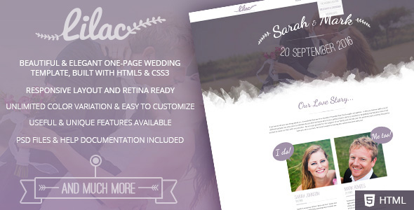
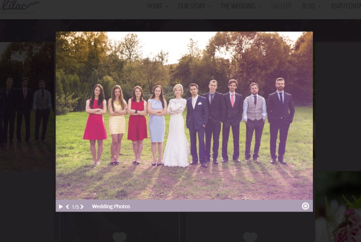
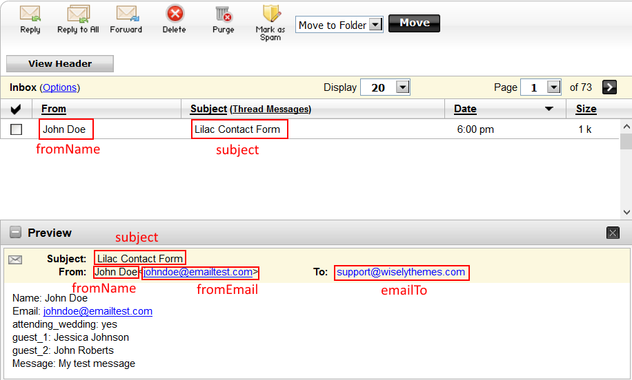

Lilac
Responsive One-page HTML5 Wedding Template
- Created: 20/06/2015
- latest Update: 20/06/2015
- By: WiselyThemes
- Email: support@wiselythemes.com
Thank you for purchasing Lilac - Responsive One-page HTML5 Wedding Template! You will find all the help you need within the documentation below, for any further assistance feel free to contact us through our Theme Forest profile. We'll be happy to answer your questions.
About this Template
Lilac it's a beautiful and elegant one-page HTML5 Template, designed and developed for couples who want to create their own wedding website. This template is, without a doubt, a creative way to invite your friends and family to your wedding and to let them know all about the ceremony details.
With Lilac you get unique sections and features such as: Event Time-line, wedding Countdown, wedding location, Gift section, Gallery section for you to share with your guests your own pictures and thoughts during the wedding using instagram and twitter, Blog, RSVP form and much more!
Lilac was built in HTML5 and CSS3 and it's Highly customizable. It has a fully responsive structure built with Bootstrap Framework and it's retina ready, so it looks stunning on all types of screens and devices (desktop, notebook, tablet and mobile).

PSD Files Included
This template has 2 PSD files included. The PSDs were built with vector layer shapes and smart objects to make it easy for you to edit and update all of the components according to your needs. They are all layered and well organized (images not included):
- Lilac One-Page Website (Lilac_Homepage.psd)
- Lilac Blog Detail Page (Lilac_Blog_Detail.psd)
Note that all the images used in the Lilac Template are not included and were used for preview purpose only.
To preview the PSD files correctly you need to install the “Dancing Script” font from Google web fonts (Dancing Script, 2 Styles by Pablo Impallari), “Open Sans Condensed” font from Google web fonts (Open Sans Condensed, 3 Styles by Steve Matteson) and “Open Sans” font from Google web fonts (Open Sans, 10 Styles by Steve Matteson)
Html Structure
This template is based on bootstrap grid system. The grid is composed by 12 columns named "col-sm-1", "col-sm-2", "col-sm-3", ... , "col-sm-12".
Here is the general structure:
CSS/LESS Files and Structure
We are using one main LESS file and four CSS files on this template. (LESS is the dynamic stylesheet language. LESS extends CSS with dynamic behavior such as variables, mixins, operations and functions. (Learn more here)
- style.less - Contains all of the specific stylings for the page
- style.css - CSS file compiled from style.less file
- bootstrap.min.css - Bootstrap grid styles
- font-awesome.min.css - Iconic font designed for Bootstrap
- lilac.css - Font-face for Lilac Custom Font
- owl.transitions.css - stylesheet for Owl Slider
Style.less structure:
/* Table of Content ================================================== #Variables #Mixins #Imports #Typography #General #Header #Navigation #Home #Our Story #Timeline #The Weddding #Wedding Location #Bridesmaids & Groomsmen #Wedding Gifts #Gallery #Blog #RSVP #Footer #PrettyPhoto #Media Queries
If you would like to edit a specific section of the site, simply find the appropriate label in the LESS/CSS file, and then scroll down until you find the appropriate style that needs to be edited.
Javascript Files
This template imports 23 Javascript files. Most of the files are grouped in the common.js file to improve the page load speed.
- bootstrap.min.js
- bootstrap-hover-dropdown.min.js
- freewall.js
- jquery.arctext.js
- jquery.easing.min.js
- jquery.nicescroll.js
- jquery.nicescroll.plus.js
- jquery.placeholder.min.js
- jquery.prettyPhoto.js
- jquery.stellar.min.js
- jquery-1.11.3.min.js
- less.min.js
- modernizr-2.8.1.min.js
- owl.carousel.min.js
- retina.min.js
- richmarker.js
- scripts.js
- supersized.js
- swfobject.js
- variables.js
- video_bg.min.js
- waypoints.min.js
- waypoints-sticky.min.js
Customization and Styles
We recommend you to do all the CSS changes you might have to do on the style.less file (such as colors, fonts, etc). Once you have done all the changes, compile LESS into CSS using this online tool. It is recommended to use CSS on production instead of LESS.
If you are in development mode, you can load LESS in your html page by adding the following code before the closure of the tag <head>:
You can change some global JS variables in the file js\variables.js, like the mobile menu title, hero height, etc.
Changing colors:
The page colors can be changed in css/style.less. Open the file in an editor, go to "Variables" section and replace the value of the variable @color with your own color. There are also some other colors you might want to change (like text color and background color).
If you are changing the colors directly on the css file (instead of the less file), you will have to use the Find and Replace tool to change the color (both hex and rgb formats). Find and Replace the hex code #ad9fb3, and the rgb code 173, 159, 179 (note that the rgb format needs to keep the two commas between the values).
Changing font:
Lilac Template uses three embed fonts from google webfonts. Go to http://www.google.com/webfonts, choose a font and use the generated code to replace de folowing tag around line 31 on index.html (and blog-single.html in case you are also using this page):
Next, in style.less go to "Variables" section. You'll find three variables for font-family, one for all major text (@font-family), one h1 headings (@headings-font-family) and one for other heading (@headings-font-family2). Replace them width the name of your choosen fonts.
Changing pattern:
The pattern is currently being used on the sections "The Wedding" and "RSVP/Contact". It can be changed in css/style.less on "Variables" section. Upload your pattern image into the folder "images" and replace the value of the variable @pattern with its path.
Changing Logo:
Edit images/logo.png or replace on all pages the image source in the folowing line:

The logo image is also being used on the page preloader. You can change it on the following line:
Retina Images:
This template is prepared for retina displays. So, for images to look great on this type of screens, the script assumes you use Apple's prescribed high-resolution modifier (@2x) to denote high-resolution image variants on your server.
For example, if you have an image on your page that looks like this:
<img src="img/my_image.png" />
The script will check your server to see if an alternative image exists at this path:
<img src="img/my_image@2x.png" />
Note that the high-resolution image should have twice the size of the low-resolution image. For example, if the low-resolution image has 1920x400, the high-resolution image must have 3840x800.
Changing Icons:
Lilac Wedding HTML5 Template comes with a custom font specifically design for Lilac template to display some elements (arrows, leaves and ribbons).
To insert an icon, you just have to use the following example:
<i class="icon-arrow-lef"></i>
We are also using Font Awesome for the icons. Please check http://fortawesome.github.io/Font-Awesome/icons for the full list of icons you can use.
To insert a FontAwesome icon, you just have to use the following example:
<i class="fa fa-home"></i>
Creating Submenu Items (dropdown):
Instead of inserting a single menu item like this:
You need to insert the following HTML markup to create the dropdown menu:
Features
Hero Fullscreen Background Slideshow:
To change the fullscreen background images open js/slideshow/slideshow.js and on slides array change the value for the keys "image". You can create as much as you want.
slides : [ // Slideshow Images
{image : 'img/hero-img.png'},
{image : 'img/hero-img2.png'},
{image : 'img/hero-img3.png'}
]
Note that you need to load the following scripts at the bottom of your html document:
Hero Background Image Grid:
This template offers you the possibility to display an image grid on your Hero's background (home). To add a background image grid to your hero section (home), follow the example on the file index-countdown.html. Add the following markup before the closure of the tag <section> of the "home" section:
 ...
...
Note that you need to load the following script at the bottom of your html document:
It's recommended to insert around 18 images (you can repeat them) to make sure that there are enough images to fill all screen sizes.
Hero Background Video:
To add a background video to your hero section (home), add the following HTML5 markup right after the opening of the section with id "home" like this:
...
Remember to change both poster and video names in the code above.
Then set the hero height to 100% of window height by adding the following code at the bottom of your HTML document:
Things to note on the example above:
- The hero section is set to 100% of window height. This is done by setting the variable hero100PercentHeight to true.
- The video is inside the folder images. You can upload it to a different folder, but don't forget to change not only the video name, but also the video folder.
Hero Countdown:
To add a countdown to your hero section (home), follow the example on the file index-countdown.html. First, you need to create a container for the countdown by adding the following HTML markup inside the home section:
Then you need to initialize the countdown object by adding the following javascript to the bottom of your HTML document:
You can change the countdown date in the second parameter of the countdown object initialization.
There are also global variables for the countdown object. You can change them in the file js\variables.js.
Countdown Global Variables:
c_days = "DAYS", //Countdown "Days" label c_hours = "HOURS", //Countdown "Hours" label c_minutes = "MIN.", //Countdown "Minutes" label c_seconds = "SEC.", //Countdown "Seconds" label countdownEndMsg = "Event Started!"; //Message to display when the countdown reaches the end
Parallax backgrounds:
To configure a Parallax background, you need to add to the container the class "parallax" and the data attribute "data-stellar-background-ratio". The data attribute "data-stellar-background-ratio" will set the speed of the parallax background. Here is an example:
In this example the parallax will be applied to the image set on the file style.less (selector .quote-fullwidth). You can change the image in the file style.less or you can add it directly to the parallax section by using inline CSS like this:
You can also set a color overlay to the parallax background by adding the class bg-color-overlay. To use it, you just need to add it on to the class attribute like this:
Google maps:
Lilac is integrated with the Google Maps API v3. Google Maps now requires an API key in order to display the map on your website. You can get a key by following this link.
Next, insert your Google API Key at the bottom of your HTML document in the following line:
To change the information(title,latitude,longitude, icon and infoWindow) of your map markers, open the file js/map.markers.js and change the markers already included or create your own markers. The structure of the map makers objects should look like this:
var map_markers = [
{
"title": "Reception",
"latitude":33.775664,
"longitude":-118.065090,
"icon":"fa-glass", //Check the full list of icons at http://fortawesome.github.io/Font-Awesome/icons/
"infoWindow":"Old Ranch Country Club
29033 West Lake Drive, Agoura Hills, CA"
},
{
"title": "Accommodation 1",
"latitude":33.777929,
"longitude":-118.076891,
"icon":"fa-bed", //Check the full list of icons at http://fortawesome.github.io/Font-Awesome/icons/
"infoWindow":"Accommodation 1
Rossmoor, CA 90720"
}
];
There are also global variables for the maps. You can change them in the file js\variables.js.
//GOOGLE MAP VARIABLES map_canvas_id = "map_canvas", //The HTML "id" of the map canvas map_color = "#ad9fb3", //Google map color map_initial_zoom = 15, //The initial zoom when Google map loads map_initial_latitude = 33.779613, //Google map initial Latitude. If "null", the latitude of the first marked will be used map_initial_longitude = -118.066904, //Google map initial Longitude. If "null", the longitude of the first marked will be used use_default_map_style = false, //If true, default map style will be used
On the global variables (js\variables.js) you can change some options like the map color, but you can also use the default google map style by setting the variable use_default_map_style to true.
PrettyPhoto:
We are using PrettyPhoto plugin to open images on a lightbox. To set a link to open on a lightbox, add the data attribute data-gal="prettyPhoto[gallery]" to the <a> tag like this:

Gallery:
Here is the basic HTML structure for the gallery:
...
...
The number of gallery rows is defined by the number of lists (<ul>) inside the gallery-scroller div. In the example above, the gallery images are divided in 2 rows (2 different <ul>), but you can remove or add more <ul> to create more rows.
Adding images to the gallery:
To add an image to the gallery, use the following markup for the list item:
Adding Instagram photos to the gallery:
To add an Instagram photo to the gallery, use the following markup for the list item:
The list item with class "instagram" will be automatically populated with an Instagram photo once you have your Instagram account set up. Check below to know how to properly configure your Instagram account.
Adding Twitter posts to the gallery:
To add Twitter post to the gallery, use the following markup for the list item:
The list item with class "tweet" will be automatically populated with Twitter post once you have your Twitter account set up. Check below to know how to properly configure your Twitter account.
Configuring Instagram account:
To properly configure your Instagram account do the following steps:
- Log in into your Instagram account
- Register a client id at http://instagram.com/developer/clients/manage/.
- Fill in all the Basic information and click "Register".
- Go to the "Security" tab and uncheck the box "Disable implicit OAuth". Click "Register".
- Save your client id, client secret, and redirect uri
- open in your browser the following url: (Replace CLIENT-ID with your own client id and replace REDIRECT-URI with your own redirect uri)
https://instagram.com/oauth/authorize/?client_id=CLIENT-ID&redirect_uri=REDIRECT-URI&response_type=token
- Authorize the app
- You will be redirected to your redirect_uri url. Grab the access_token parameter from your browser url. It should look like this:
29941445.4fba4e.79a5b952446d431684cafca090f51b9
- Get your user id at http://jelled.com/instagram/lookup-user-id by entering your Instagram username
- Go to your project folder and open the file instagram/instagram.php on a text editor.
- Change the variables user_id and access_token with your own.
$user_id = '59245029'; $access_token = '29941445.4fba4e.79a5b952446d431684cafca090f51b9';
Configuring Twitter account:
To customize your twitter feed open the file js\variables.js, and change the variable twitter_username with your own Twitter username.
Next, you need to have a twitter App for your usage in order to obtain OAuth credentials. To properly configure your Twitter app do the following steps:
- Log in into your Twitter account
- Create a new Twitter App at https://dev.twitter.com/apps
- Fill in all the information and click "Create your Twitter application"
- Go to the tab "Keys and Access Token"
- Save the "Api key" and "Api secret". Scroll to the bottom of the page and click on "Generate My Access Token and Token Secret" (you may have to refresh the page after you done this). Save the "Access token" and "Access token secret"
- Open the file twitter/index.php on a text editor and insert your OAuth credentials (as shown on code below), and enable caching if you wish. Your cache directory of choice must be writable by PHP.
// Your Twitter App Consumer Key private $consumer_key = 'API_KEY'; // Your Twitter App Consumer Secret private $consumer_secret = 'YOUR_CONSUMER_SECRET'; // Your Twitter App Access Token private $user_token = 'YOUR_ACCESS_TOKEN'; // Your Twitter App Access Token Secret private $user_secret = 'YOUR_ACCESS_TOKEN_SECRET';
Social Networks Sharing:
The social network sharing is currently set on the page blog-single.html. Firstly, the meta tags for social networks are set at the top of the page inside <head> tag:
Next, insert your sharing info (url, image, caption) at:
Remember to encode the URL's using this tool.
Note: for Facebook sharing to work properly, use "?fb=true" at the end of your url like this:
http://www.wiselythemes.com/html/cozy/blog-detail.html?fb=true
"Slide-to" buttons:
This button allows you to scroll to an anchor on button click. You can check an example of this button in the section "Wedding Location" (button "RSVP").
To create a "Slide-to" button add the class "scrollto" to the button like this:
RSVP
Note that the href attribute refers to the id of the item to scroll to.
Show content on scroll:
You have 5 different effects available to show the content on scroll (once they enter the viewport).
- fade - fade in the element
- from-top - slide the element from the top with a simultaneous fade in.
- from-bottom - slide the element from the bottom with a simultaneous fade in.
- from-left - slide the element from the left with a simultaneous fade in.
- from-right - slide the element from the right with a simultaneous fade in.
To apply those effects to an element, add the data attributes data-animation-direction and data-animation-delay to the element like this:
Our Partners
The data attribute data-animation-delay refers to the delay time (in milliseconds) that the effect will take to start.
Contact Form:
To set your contact form information (emailTo, fromName, fromEmail and subject), open the file contact.php and set the following variables:
$emailto = 'youremail@youremail.com'; // Insert the email address that will receive the messages $fromName = 'Your Defaul From Name'; // Insert a default "Name" email address (this field will be displayed in the email header) $fromEmail = 'default@yourdomain.com'; // Insert a default "From" email address (this field will be displayed in the email header) $subject = 'Lilac Contact Form'; // Insert a default conctact form subject
Check the image below for a visual description where the variables are applied.

Here is the HTML markup for the contact form:
Note that in order to allow users to submit the form, you need to have a button with class submit_form (like the example above).
To make fields required, simply add the class "required" to the input field.
The variables you set in the file contact.php can be overridden by adding to the contact form input fields the classes emailTo, fromName, fromEmail or subject. This can be useful if you want to have different contact forms in different pages and each of them has different emailTo, subject, etc.
On the HTML markup example above:
- the variable formName is being overridden on the input field "Name"
- the variable fromEmail is being overridden on the input field "Email"
- the variable subject is being overridden on the input field "Subject"
The variable emailto is not being overridden, so it will use the default value set on the file contact.php. You can also override this variable using an hidden input text field like this:
Adding new fields to the contact form:
To add new fields you simply have to add them inside the html <form> tag (there's no need to change anything in the PHP or JS code.
For example, if you want to add a phone field to the contact form, you just have to use the following markup:
Note that we have set the field has required, but you can remove this by removing the class "required".
Adding special fields to the contact form:
On Lilac we developed 2 special fields for the contact form: radio-lilac and add_guest/guest_list
The field radio-lilac mimes the functionality of default radio buttons. Here is an example of the HTML markup for this field:
Things to note on this field:
- The wrapper of the buttons has the class radio-lilac
- This same wrapper has the data attribute data-value. The value set on this attribute will be shown as the label of the field in the email content (check the image below)
- Both buttons inside the wrapper also has the data attribute data-value. The value set on this attribute will be shown as the value of the field in the email content (check the image below)
The second special field is the add_guest/guest_list. This field is composed by 3 different parts:
- The input field to insert the guest name
- The button to add the guest name to the guest list
- The wrapper for the guest list
Here is an example of the HTML markup for this field:
Things to note on this field:
- The id of the input field is the same as data-input of the button (see the image below to check how they bound each other). This data-input will also be used as the field label on the email content.
- The button must have the class add_button. It has two data attributes: data-input (explained on the line above) and data-wrapper. The data-wrapper must be the same as the id of the wrapper for the guest list (see the image below to check how they bound each other).
- The wrapper for the guest list must have the class add_list
Basically, the button is the connector between the input field and the guest list. This is set using the data attributes explained above.
There are also global variables for the Contact From. You can change them in the file js\variables.js.
Sources and Credits
The images* used in the preview template are from:
- Wedding bouquet by llhedgehogll
- Wedding 1 by EpicStockMedia
- Wedding 2 by EpicStockMedia
- Wedding 3 by EpicStockMedia
- Newlyweds with guest posing in park by halfpoint
- Newlyweds with guest on their garden party by halfpoint
- Wedding guests clinking glasses by halfpoint
- Place setting on a table at a wedding reception by 2nix
- Wedding - Garden Party by korkut82
- Smiling Group by ollyi
- Enjoying each other's company by GlobalStock
- Canapes by Tadej Zupancic
- Gold Gift Box With Retro Filter by happydancing
- Vintage Flower Bouquet by Maglara
- Flowers By Cas Cornelissen from Unsplash
- Flowers By Steven Spassov from Unsplash
- Field By Zugr from Unsplash
- Piece of Honey Cake by Viktor Hanacek
- California Explorer Pack by Simone Anne on Death to the Stock Photo
- Lake Adventure Pack by Justin Posey on Death to the Stock Photo
* Images are not included in this template.
The Video used in the preview template is from:
- Landscape Orange Sky by splitshire
Fonts:
- Google web fonts- Open Sans, 10 Styles by Steve Matteson
- Google web fonts- Open Sans Condensed, 3 Styles by Steve Matteson
- Google web fonts- Dancing Script, 2 Styles by Pablo Impallari
- Font Awesome- Iconic font designed for Bootstrap
- Lilac Font- Custom font designed for Lilac Template
Scripts:
- bootstrap.min.js http://getbootstrap.com/
- bootstrap-hover-dropdown.min.js http://cameronspear.com/blog/bootstrap-dropdown-on-hover-plugin/
- freewall.js http://vnjs.net/www/project/freewall/
- jquery.arctext.js https://github.com/codrops/Arctext
- jquery-1.11.3.min.js http://jquery.com/
- jquery.easing.min.js http://api.jqueryui.com/easings/
- jquery.nicescroll.js http://areaaperta.com/nicescroll/
- jquery.placeholder.min.js http://mths.be/placeholder
- jquery.prettyPhoto.js http://www.no-margin-for-errors.com/projects/prettyphoto-jquery-lightbox-clone/
- jquery.stellar.min.js http://markdalgleish.com/projects/stellar.js/
- less.min.js http://lesscss.org/
- modernizr-2.8.1.min.js http://modernizr.com/
- owl.carousel.min.js http://owlgraphic.com/owlcarousel/
- retina.min.js http://imulus.github.io/retinajs/
- supersized.js http://buildinternet.com/project/supersized/
- swfobject.js http://code.google.com/p/swfobject/
- waypoints.min.js http://imakewebthings.com/jquery-waypoints/
- waypoints-sticky.min.js http://imakewebthings.com/jquery-waypoints/
Thank You!
Once again, thank you so much for purchasing this template. As we said at the beginning, we will be glad to help you if you have any questions relating to this template.
WiselyThemes